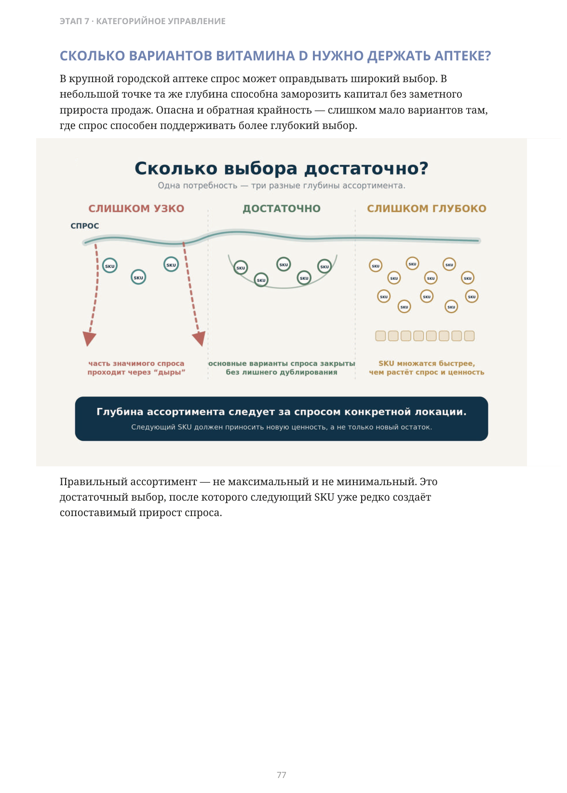
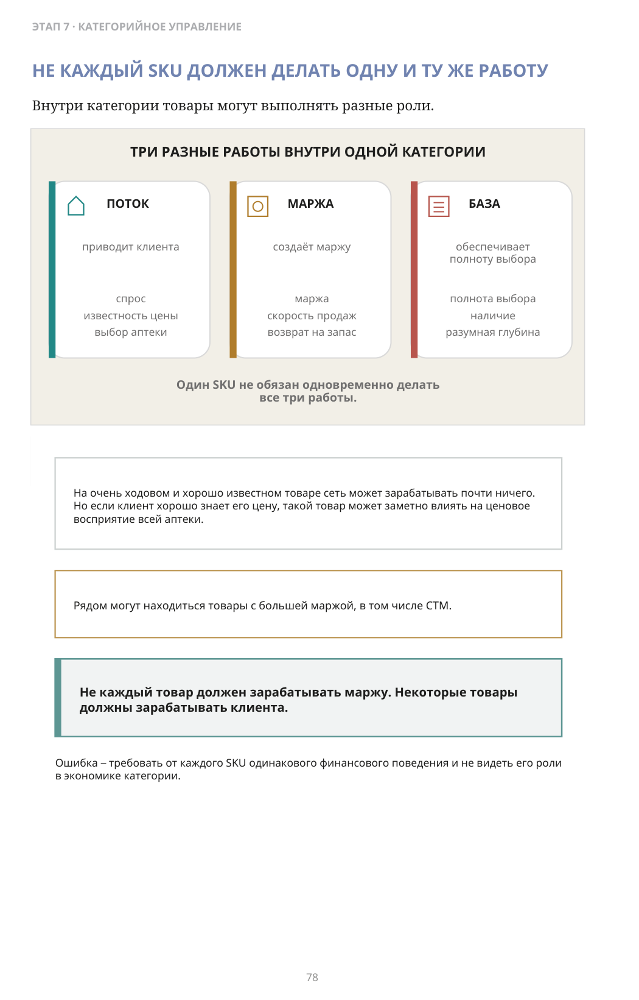
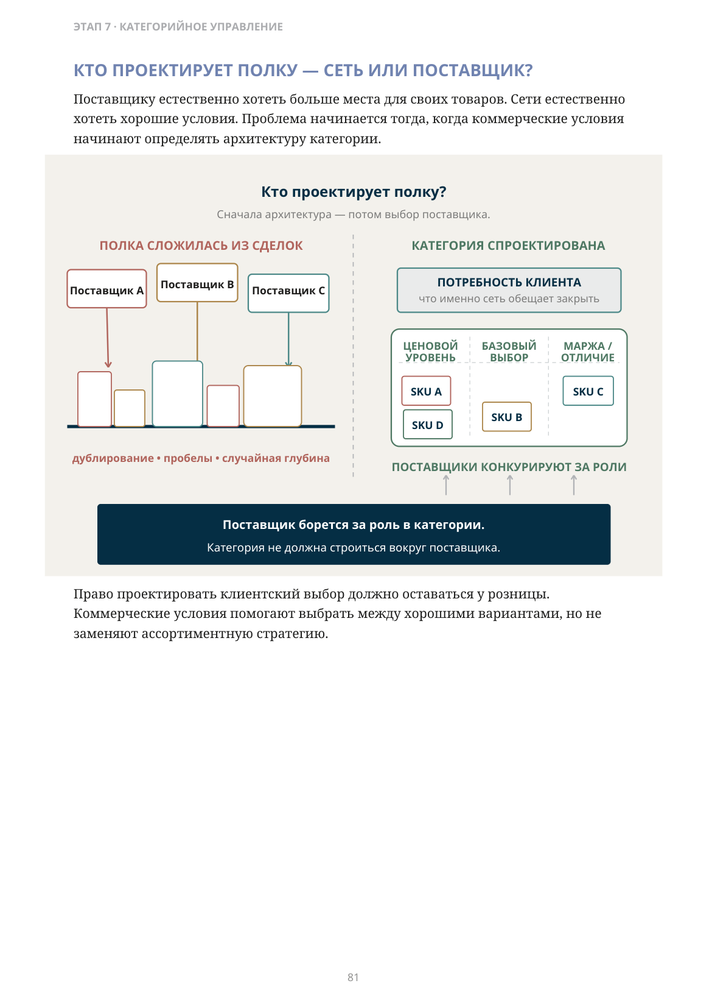
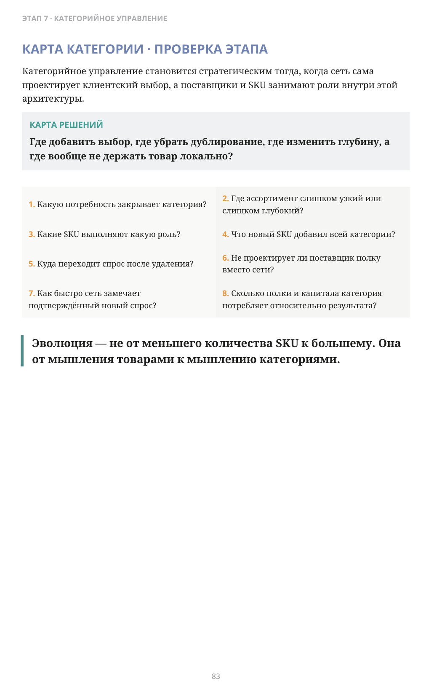

У вас есть несколько товаров — или у вас есть категория?
ЧАСТЬ II · ЭТАП 7
Архитектура категории, роли SKU и ассортимент от потребности клиента
Поставщик предложил выгодную помаду. Сеть поставила её на полку.
Можно ли теперь сказать, что в аптеке появилась категория губной помады?
Формально товар есть. Но пойдёт ли клиент в эту сеть специально тогда, когда захочет выбрать помаду?
Если мне нужен товар этой категории, я знаю, куда идти.
Эволюция ассортимента — это не движение от малого количества SKU к большому. Это переход от случайного набора товаров к осознанному управлению ассортиментом вокруг клиентской потребности.
КАТЕГОРИЯ В СИСТЕМЕ — И КАТЕГОРИЯ В ГОЛОВЕ КЛИЕНТА
Внутри компании всё может выглядеть убедительно: десятки товарных карточек, поставщики, остатки, продажи. Но клиент может видеть несколько случайных брендов, неполный выбор или отсутствие нужного варианта.
Ассортимент — это не только то, что у вас есть. Это то, что клиент уверен найти у вас.
Поэтому категорийное управление начинается не с договора с поставщиком. Сначала сеть решает, какую потребность клиента она хочет закрывать и насколько полно.
ПОТРЕБНОСТЬ ПЕРВИЧНА
Человек не приходит за «десятой позицией классификатора». Он хочет снизить температуру, выбрать витамины, подобрать уход, купить товары для ребёнка, найти конкретный бренд, форму или ценовой уровень.
Потребность
Выбор
Варианты
SKU
Поставщик
→ → → →
Логика должна идти от потребности клиента к структуре выбора, затем к конкретным SKU и только потом к поставщикам.
Обратная последовательность опасна: поставщик дал хорошие условия → товар появился на полке → сеть потом пытается понять, зачем он клиенту.
Ассортиментная стратегия начинается с потребности. Закупка начинается после неё.
Но сколько выбора достаточно?
Правильного числа для всей сети нет. Глубина должна зависеть от того, какой объём и структура спроса реально существуют в конкретной локации.
СКОЛЬКО ВАРИАНТОВ ВИТАМИНА D НУЖНО ДЕРЖАТЬ АПТЕКЕ?
В крупной городской аптеке спрос может оправдывать широкий выбор. В небольшой точке та же глубина способна заморозить капитал без заметного прироста продаж. Опасна и обратная крайность — слишком мало вариантов там, где спрос способен поддерживать более глубокий выбор.
Сколько выбора достаточно?
Одна потребность — три разные глубины ассортимента.
СЛИШКОМ УЗКО — часть значимого спроса проходит через «дыры».
ДОСТАТОЧНО — основные варианты спроса закрыты без лишнего дублирования.
СЛИШКОМ ГЛУБОКО — SKU множатся быстрее, чем растёт спрос и ценность.
Глубина ассортимента следует за спросом конкретной локации.
Следующий SKU должен приносить новую ценность, а не только новый остаток.
Правильный ассортимент — не максимальный и не минимальный. Это достаточный выбор, после которого следующий SKU уже редко создаёт сопоставимый прирост спроса.

Описание схемы
FIG_036: СКОЛЬКО ВАРИАНТОВ ВИТАМИНА D НУЖНО ДЕРЖАТЬ АПТЕКЕ?
Три глубины ассортимента: слишком узкая, достаточная и слишком глубокая. Узкая теряет часть спроса, глубокая замораживает капитал, а оптимум следует спросу конкретной локации.
НЕ КАЖДЫЙ SKU ДОЛЖЕН ДЕЛАТЬ ОДНУ И ТУ ЖЕ РАБОТУ
Внутри категории товары могут выполнять разные роли.
На очень ходовом и хорошо известном товаре сеть может зарабатывать почти ничего. Но если клиент хорошо знает его цену, такой товар может заметно влиять на ценовое восприятие всей аптеки.
Рядом могут находиться товары с большей маржой, в том числе СТМ.
Не каждый товар должен зарабатывать маржу. Некоторые товары должны зарабатывать клиента.
Ошибка — требовать от каждого SKU одинакового финансового поведения и не видеть его роли в экономике категории.

Описание схемы
FIG_037: НЕ КАЖДЫЙ SKU ДОЛЖЕН ДЕЛАТЬ ОДНУ И ТУ ЖЕ РАБОТУ
Одна категория разделена на три разные работы: поток обеспечивает доступность и выбор аптеки, марка создаёт марку и возврат за запас, база обеспечивает полноту выбора и глубину. Один SKU не обязан одновременно выполнять все три роли.
ЧТО ПРОИСХОДИТ СО СПРОСОМ, КОГДА SKU ПОЯВЛЯЕТСЯ ИЛИ ИСЧЕЗАЕТ?
Новый SKU может продаваться хорошо — и при этом почти не добавить продаж категории. При выводе товара обратный вопрос такой же важный: спрос перейдёт на другой SKU или уйдёт вместе с клиентом?
Куда движется спрос?
Продажи SKU — это ещё не ответ. Важно увидеть направление потока.
ДОБАВИЛИ SKU — Что дополнительно получила категория?
Существующие SKU → NEW: переток со старых SKU.
Новый спрос извне категории → NEW: часть продаж — новая, часть — перераспределена.
УБРАЛИ SKU — Что сделает клиент, когда товара не станет?
Удалённый SKU → другой SKU: спрос переносится внутри категории.
Удалённый SKU → за границу сети: спрос уходит из сети.
Оптимизация ассортимента — убрать запас, не убрав спрос.
Поэтому ввод нового SKU оценивается по изменению результата всей категории: вырос ли общий спрос, маржа и охват потребности — или продажи просто перераспределились между SKU.
НОВЫЙ SKU: ЧТО ОН ДОБАВЛЯЕТ КАТЕГОРИИ?
Поставщик может предложить хороший товар, скидку и маркетинговую поддержку. Но это ещё не причина вводить позицию.
Новая позиция оправдана, если она действительно добавляет отсутствующий ценовой уровень, новую форму или значимое функциональное отличие, востребованный бренд, новый клиентский сегмент или новую роль в трафике и марже.
Ценность нового SKU определяется не только тем, сколько он продал, а тем, что дополнительно получила категория.
ВЫВОД SKU: КУДА ПЕРЕЙДЁТ СПРОС?
Самый медленный товар не всегда лучший кандидат на удаление. Он может закрывать редкую, но уникальную потребность, поддерживать важный бренд или нужный ценовой уровень.
Что сделает клиент, когда этого товара не станет?
Если он легко выберет другой SKU внутри категории, сеть может освободить полку и капитал почти без потери продаж. Если замены нет, спрос может уйти вместе с товаром.
Спрос переносится внутри категории — если товар в значительной степени дублировал другие варианты. Спрос уходит из сети — если товар закрывал уникальную потребность или сильное предпочтение.
Оптимизация ассортимента — это умение убрать запас, не убрав спрос.
Поставщику естественно хотеть больше места для своих товаров. Сети естественно хотеть хорошие условия. Проблема начинается тогда, когда коммерческие условия начинают определять архитектуру категории.
ПОЛКА СЛОЖИЛАСЬ ИЗ СДЕЛОК: Поставщик A → полка; Поставщик B → полка; Поставщик C → полка.
Право проектировать клиентский выбор должно оставаться у розницы. Коммерческие условия помогают выбрать между хорошими вариантами, но не заменяют ассортиментную стратегию.

Описание схемы
FIG_039: Кто проектирует полку — сеть или поставщик?
Слева полка складывается из отдельных сделок с поставщиками; справа категория сначала проектируется по потребности клиента, целевой глубине и ролям SKU, после чего поставщики конкурируют за роль в категории. Вывод: поставщик борется за роль, а не просто за место на полке.
МОЖЕТ ЛИ ХОРОШАЯ СКИДКА ОКАЗАТЬСЯ СЛИШКОМ ДОРОГОЙ?
Представим ходовой бренд, который клиент регулярно ищет. Сеть не договорилась о желаемых условиях и вывела его, заменив более маржинальным товаром.
В закупочном отчёте решение может выглядеть экономически привлекательным. Но если часть клиентов приходила именно за этим брендом и не принимает замену, экономия в закупке начинает оплачиваться потерянным трафиком.
Если переговоры убрали с полки товар, за которым приходил клиент, скидка могла оказаться слишком дорогой.
РЫНОК МОЖЕТ ИЗМЕНИТЬСЯ БЫСТРЕЕ МАТРИЦЫ
Представим сеть из ста аптек. Новый товар сначала появился в двадцати точках. В этих точках продажи ускорились, а в других локациях появились признаки похожего спроса.
Но автоматически отправлять товар во все остальные восемьдесят аптек неправильно. Ассортимент должен распространяться вслед за подтверждённым спросом — через пилот, сравнение похожих точек и проверку результата.
Рынок может измениться за неделю. Ассортиментная матрица не должна ждать полгода.
КАРТА КАТЕГОРИИ · ПРОВЕРКА ЭТАПА
Категорийное управление становится стратегическим тогда, когда сеть сама проектирует клиентский выбор, а поставщики и SKU занимают роли внутри этой архитектуры.
- Какую потребность закрывает категория?
- Где ассортимент слишком узкий или слишком глубокий?
- Какие SKU выполняют какую роль?
- Что новый SKU добавил всей категории?
- Куда переходит спрос после удаления?
- Не проектирует ли поставщик полку вместо сети?
- Как быстро сеть замечает подтверждённый новый спрос?
- Сколько полки и капитала категория потребляет относительно результата?
Эволюция — не от меньшего количества SKU к большему. Она от мышления товарами к мышлению категориями.

Описание схемы
FIG_040: КАРТА КАТЕГОРИИ · ПРОВЕРКА ЭТАПА
Инфографика «КАРТА КАТЕГОРИИ · ПРОВЕРКА ЭТАПА». Сопровождающий текст раздела поясняет её смысл: Категорийное управление становится стратегическим тогда, когда сеть сама проектирует клиентский выбор, а поставщики и SKU занимают роли внутри этой архитектуры. Какую потребность закрывает категория? Где ассортимент слишком узкий или слишком глубокий? Какие SKU выполняют какую роль? Что новый SKU добавил всей категории? Куда переходит спрос после удаления? Не проектирует ли поставщик полку вместо сети? Как быстро сеть замечает подтверждённый новый спрос? Сколько полки и капитала категория потребляет относительно результата? Эволюция — не от меньшего количества SKU к большему. Она от мышления товарами к мышлению категориями.
Раньше поставщик мог в значительной степени определять, какие товары попадут на полку.
Зрелая сеть забирает себе право проектировать категорию. Поставщик попрежнему важен — но теперь он конкурирует не просто за место на полке, а за роль внутри клиентского решения, которое спроектировала сеть.
Ассортимент становится собственным активом розницы и причиной клиентского трафика.
ЧТО ДАЛЬШЕ?
Категория уже спроектирована.
Но обязательно ли весь ассортимент держать физически в каждой аптеке?
Или часть выбора можно сделать доступной клиенту из общего запаса сети — через центральный склад, другие точки и заказ?